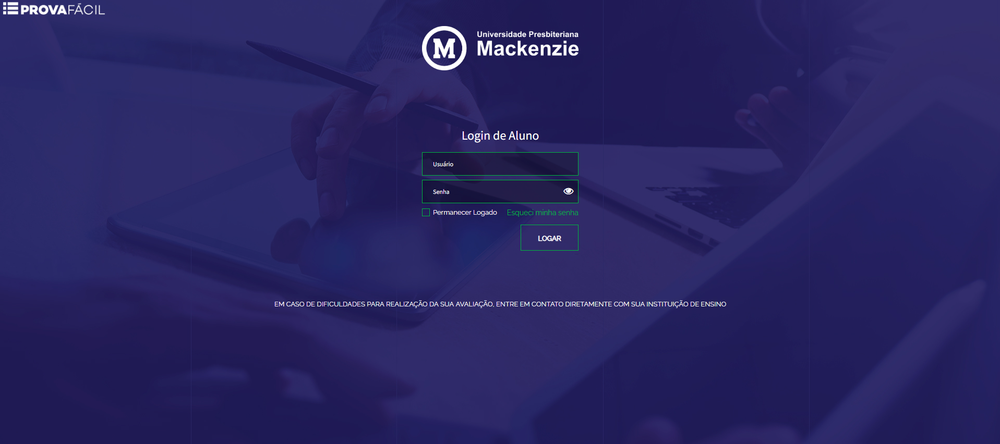

MURAL DE AVALIAÇÕES EAD
ENCERRAMENTO DAS AVALIAÇÕES INTERMEDIÁRIAS II
00
dias
00
horas
00
minutos
00
segundos
29 DE MAIO ATÉ 3 DE JUNHO
As Avaliações Intermediárias II deste semestre acontecerão entre os dias 29 de maio e 03 de junho, confira abaixo as informações mais importantes para que você tenha sucesso nas suas provas.
ACESSO
- USUÁRIO: seu RA completo
- SENHA: seu CPF completo (SOMENTE NÚMEROS)
Caso tenha problemas para acessar a plataforma, entre em contato com: suporte.ead@mackenzie.br
INSTRUÇÕES
- Não saia do modo tela cheia nem alterne entre páginas ou janelas. Toda vez que isso acontecer, o sistema vai impedir que você continue a sua prova.
- Atente-se para a duração da prova, uma vez que a prova tenha sido iniciada, não será permitida a paralisação do tempo.
- Antes de iniciar a prova, feche todos os programas e aplicativos abertos, de forma que apenas o sistema Prova Fácil fique ativo.
- Você poderá trocar a alternativa escolhida até o momento de enviar/finalizar a prova.
- Respondidas as questões, confira se todas as suas respostas estão de acordo antes de enviar sua avaliação.
Importante:
- durante a prova, não utilize as setas do teclado para rolar a página, pois as respostas já selecionadas poderão ser alteradas;
- abra somente uma avaliação por vez, não é possível realizar mais de uma ao mesmo tempo;
- é necessário elaborar a resposta da questão discursiva diretamente na caixa de texto da prova;
- não se esqueça de salvar a resposta discursiva para que seja computada;
- utilize um desktop ou computador para realização das provas, evite a utilização de Ipads, Tablets e Celulares;
- lembre-se de que a prova é individual, sem consulta a quaisquer materiais próprios ou de terceiros.
PERGUNTAS FREQUENTES
-
POR QUÊ NÃO ESTOU VISUALIZANDO AS PROVAS DE TODAS AS MINHAS DISCIPLINAS?
Nem todas as disciplinas presentes no seu curso incluirão avaliações intermediárias, algumas disciplinas podem ser avaliadas por meio de projetos ou entregas específicas. Para consultar a lista de disciplinas que NÃO possuem avaliações, clique AQUI!
-
QUANDO AS NOTAS SERÃO DIVULGADAS?
Conforme previsto pelo calendário acadêmico, as notas serão publicadas juntamente dos gabaritos no dia 08 de junho, na própria plataforma ProvaFácil.
-
COMO FAÇO PARA SOLICITAR A REVISÃO DE UMA QUESTÃO?
Para solicitar a revisão de uma questão, aguarde pela publicação das notas e gabaritos para solicitar um requerimento de "REVISÃO DE PROVAS EAD/SEMIPRESENCIAL" no Portal do Aluno.